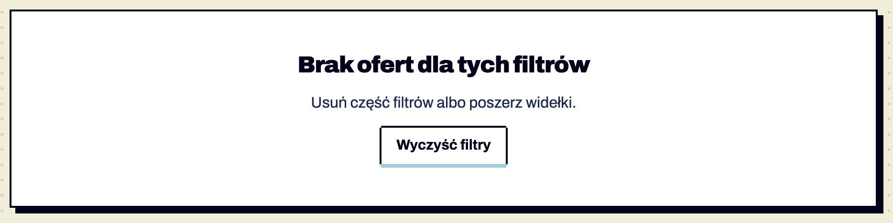

Zero wyników albo brak treści: tytuł, jedno zdanie i akcja naprawcza. Dobre miejsce na jedyną ilustrację ekranu. Potwierdzone w dokumentacji S01 §6.10–6.11.

empty-state · Pusty stan po filtrowaniu (S11) S11 · skills/panel-piksel-ui-workspace/iteration-1/job-board-listing-filters/with_skill/outputs/levelup-jobs-wyniki.html · selektor [data-empty-for] · szerokość 1280 px · stan: po interakcji: (()=>{const i=document.querySelector('input[data-search]');i.value='kobol';i.dis
Anatomia i komponenty składowe
Część / rola
Wymagana / opcjonalna
Składnik / źródło
Co można zmienić / status
panel z cieniem 6 px
wymagany
.empty
Potwierdzone w dokumentacji
ilustracja 96 px
opcjonalna
.empty-art
nie pokazano Do potwierdzenia
tytuł h2
wymagany
—
Potwierdzone w dokumentacji
zdanie
wymagane
—
Potwierdzone w dokumentacji
przycisk
wymagany
K01 „Wyczyść filtry”
Potwierdzone w dokumentacji
Warianty i zastosowanie
Oś
Wartość
Kiedy użyć
Co się zmienia
Ograniczenia / status / źródło
przyczyna
brak wyników filtrów
S11
data-empty-for
Potwierdzone w dokumentacji
Zachowanie, treści i lokalizacja
Pojawia się automatycznie przy 0 wynikach; „Wyczyść filtry” przywraca listę (test klikania) Potwierdzone w dokumentacji.
Zalecane i niewskazane
Zalecane — przykład
Niewskazane — przykład
Powód / status / źródło
przycisk naprawczy
sam tekst „Brak wyników”
Potwierdzone w dokumentacji
Tokeny i style
Zastosowanie
Token
Tryb / wariant
Wartość
Źródło
Status
cień
--shadow-lg
6 px
S01
Potwierdzone w dokumentacji
Wymiary, odległości i układ
Elementy / krawędzie
Wariant
Wartość / relacja
Token
Reguła / źródło / dokładność
padding
—
40×24 px
—
Potwierdzone w dokumentacji
Typografia
Rola tekstu
Styl
Font / weight
Rozmiar
Interlinia
Tracking
Kolor / zachowanie / status
tytuł
h1-size
Archivo 900
24
32
−0.6px
Potwierdzone w dokumentacji
Przykład na żywo
Ta sama sekcja co w examples/komponenty.html — działa na systemie 1.11.0. Przełącz motyw w nagłówku, żeby zobaczyć tryb ciemny.
Zakładki z panelami i tabela sortowalna
Zakładki (role="tab") tylko gdy przełączają panele treści. Tabela: każda kolumna z danymi sortowalna, pakiet po randze (data-sort-value).
pixel-ilustracja + nagłówek h1 + jedno zdanie + przycisk główny
Separator
.dither (§5)
Lista z punktorami
.list-square (§5)
Cel: WCAG 2.2 AA. Statyczne materiały i testy automatyczne w Chrome nie dowodzą zgodności — miejsca oznaczone „Do testu we wdrożeniu” wymagają testu z czytnikiem ekranu (design.md §0.6).